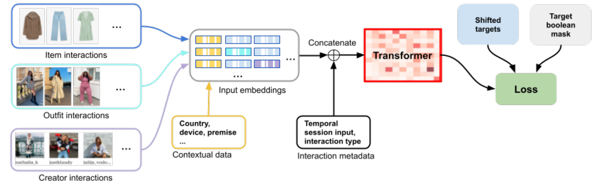

Reusable Self-Attention Recommender Systems in Fashion Industry Applications (面向时尚工业场景的可复用自注意力推荐系统)
- 会议/期刊: RecSys 2022（Sixteenth ACM Conference on Recommender Systems，4 页工业实践短文 / talk paper）
- 作者与机构: Marjan Celikik, Jacek Wasilewski, Ana Peleteiro Ramallo（Zalando SE, Berlin）
- 推荐链路定位: 精排 + 重排（同一模型复用至会话召回式打分与端到端生成式穿搭）
- 研究方向: 多模态推荐（视觉-文本-品类异构元数据融合）/ 冷启动与长尾推荐
- 论文原文: https://arxiv.org/abs/2301.06777v1
- 开源代码: 暂未开源
TL;DR (1分钟核心速览)
针对“每个触点各建一套端到端系统”导致的维护爆炸与反馈回路放大偏置，Zalando 提出一个可配置的 Transformer 推荐骨架：把 item / outfit / creator 三类实体、click / wishlist / purchase 三类交互压进结构同构的嵌入空间，用目标布尔掩码让多源序列只对 outfit 目标算损失，并用离散化交互新鲜度隐式建模 session 以区分长短期兴趣。评估完全在线上真实流量 A/B（非离线 Full-Ranking）上进行：outfit 目录页全量互动 +28.5%、style preview +23.9%、Get-the-look 冷启动 +109.4% / 存量 +130.6%，算法穿搭（AFC）留存 +11.20%；同流量下 p99 延迟约降一半、吞吐约提升 3 倍。
Background & Motivation (背景与核心矛盾)
- 主流范式：时尚灵感场景（图 1）被拆成穿搭目录排序、风格预览轮播、会话内“Get-the-look”、算法时尚伴侣 AFC 等多条链路，各自维护一套 LTR / kNN / Siamese 系统；学术侧则以标准化数据集上的离线指标验证 self-attention 推荐。
- 前人局限：其一，多数自注意力推荐工作只用单一用例、单一交互类型，丢弃了 item 与用户异构元数据，而深度推荐恰恰只在特征丰富时才发挥上限；其二，各触点独立建模使训练集被人为切碎，且模型反复学习自己前一天的曝光结果，放大流行度偏置与展示偏置（feedback loop）。
- 核心洞察 (Key Insight)：不同用例所需的“信号”其实是同一份用户旅程数据的不同切片——只要实体被映射到同一嵌入结构，一个编码器就能同时服务长期偏好排序与短期会话意图；而缺失交互的冷启动用户也可借同序列内其他实体类型（item/creator）或静态上下文补全。
- 本文切入点：以“实体-类型解耦的输入层 + 因果语言模型训练 + 目标掩码”替代多套专用模型，并把过滤/重排业务逻辑外置到可配置后端。
Method (核心方法设计)
1. 整体框架 (Overall Architecture)
输入是一条异构交互序列，每步记录 (实体, 交互类型, 时间戳)，实体可为 outfit（一组 item）、单个 item 或 creator（一组 outfit）。所有实体经同一套拼接逻辑变成等维向量，与离散化 recency、1-hot 交互特征、用户静态上下文嵌入一起送入因果掩码 Transformer 编码器，以 CLM（下一实体预测）方式训练；末位置隐状态经 softmax 在全库 outfit 上打分，交给业务过滤（规则/库存）与重排（新鲜度指数衰减、多样性、MAB 探索）。同一份序列数据另训练编码器-解码器变体（编码器吃 outfit 之前的交互，解码器自回归输出该 outfit 内的 item 序列）用于个性化穿搭生成。
flowchart TD
A["异构交互序列: item/outfit/creator × click/wishlist/purchase + recency + 用户静态上下文"] --> B["同构嵌入层: 特征拼接 + 集合内均值 + 缺失补零"]
B --> C["因果掩码 Transformer 编码器 (CLM + 目标掩码)"]
C --> D["末位置 softmax → outfit 排序打分"]
C --> E["编码器-解码器变体 → 自回归穿搭生成"]
D --> F["业务过滤 → 新鲜度指数衰减/多样性/MAB 重排"]
2. 关键设计拆解 (Key Designs)
- 异构实体同构化（Set-as-Entity Embedding）：痛点是 outfit 是 item 集合、creator 是 outfit 集合，若各建塔则无法共享参数与序列。做法是对每个类别特征 \(f\in\mathcal{F}\) 在集合内取均值，并对缺失特征补零后拼接：
其中 \(\mathbf{1}(t_x)\)为交互类型 1-hot、\(\mathbf{u}\) 为用户静态上下文（置于序列首部，服务全冷启动用户）。直觉：均值聚合使“单 item”退化为“单元素 outfit”，用一个算子吃掉三种粒度，天然获得跨实体迁移与冷启动补全能力。
- 目标掩码 + 新鲜度会话建模：痛点一是多源序列若全位置算损失会把 creator 点击误当穿搭偏好，痛点二是兴趣跨 session 剧烈漂移。做法是引入目标指示 \(\mathbb{I}[y_x\in\mathcal{O}]\) 只保留 outfit 目标，并把 recency 直接拼进实体向量而非单列位置编码：
注意力因此可自行用 \(r_x\) 选出“当天同 session”的邻居，等价于软性会话切分而无需显式 session id；作者报告忽略该结构会显著掉点。
-
生成式穿搭的共享编码器与训练/推理同构部署：生成任务把“被交互 outfit 内的 item 序列”作为解码器监督，迫使模型学到时尚兼容性（compatibility）而非单纯共现：\(p(o_{1:m}\mid\mathcal{S}_{<x})=\prod_{j=1}^{m}p(o_j\mid\mathcal{S}_{<x},o_{<j})\)。工程上把实体特征映射与模型放在同一服务、只传原始交互 id，避免集合展开导致的网络放大，并使训练/推理特征逻辑完全一致。
-
训练目标与推理开销：排序侧对比 softmax、BPR、top-1、BCE，仅 softmax 有效（其余在强异构特征下不收敛到可用水平）；负样本为全库 softmax（免显式负采样）。推理为单次前向 + 末位置打分，相对 TF-Ranking 基线 p99 约减半、同流量吞吐约 3×（后者因扩展性问题每请求仅能重排 1000 件）。
Experimental Setup & Evaluation Protocol (实验设置与评估协议)
- 数据集与预处理：本文不使用公开离线数据集，全部实验为 Zalando 生产流量在线 A/B；训练数据为日更的用户旅程异构交互日志（无 5-core 过滤，无交互用户靠静态上下文兜底）。
| 数据源 | 实体类型 | 交互类型 | 更新频率 | 场景说明 |
|---|---|---|---|---|
| Zalando 生产日志 | outfit / item / creator | click / wishlist / purchase | 日更（含实时流） | 穿搭目录、风格预览、Get-the-look、AFC 生成 |
| 用户静态上下文 | 用户画像特征 | — | 日更 | 解决零交互全冷启动 |
- 数据划分与防穿越 (Splitting Strategy)：未报告离线划分；线上采用时间因果的训练/服务错位，并对序列施加因果掩码保证不看未来交互。
- 排名评测协议 (Ranking Protocol)：无离线 Full-Ranking / Sampled Ranking 指标；线上指标为用户互动率（engagement）与留存（retention），并按
Cold-start / Existing / All三档用户分层切分报告。 - 对比基线与超参设置：排序侧基线为 TF-Ranking 的 LTR 与 CNN-embedding kNN；生成侧基线为 Siamese Nets。Embedding 维度 \(d\)、层数、学习率等均未披露，亦未报告显著性检验（\(p\) 值）。
Key Experimental Results (实验关键数据)
1. 主实验对比 (Main Results)
表 1：三触点线上 A/B（相对基线互动提升，正值为本文模型更优）
| 触点 | 基线 | Cold-start | Existing | All |
|---|---|---|---|---|
| Outfit catalog | LTR (TF-Ranking) | +42.0% | +27.0% | +28.5% |
| Style preview carousel | LTR | +39.7% | +23.1% | +23.9% |
| Get-the-look (会话内) | CNN-kNN | +109.4% | +130.6% | +130.4% |
表 2：AFC 算法穿搭生成线上 A/B（Transformer vs. Siamese Nets）
| 对照设置 | Engagement | Retention |
|---|---|---|
| (1) Transformer vs. SN | +5.79% | +11.20% |
| (2) Transformer+单嵌入快回退 vs. Transformer+SN | +1.54% | +4.9% |
2. 消融实验 (Ablation Study)
原文未设标准离线消融，仅有零散设计选项对照，汇总如下：
| 变体 / 设计选择 | 相对表现 | 说明 |
|---|---|---|
| 末位置 softmax | 最优（作者称显著） | 唯一可用 |
| BPR / top-1 / BCE | 更差 | 在异构强特征下失效 |
| 去掉 session/recency 结构 | 掉点（未给数值） | 作者明确观察到负向 |
| 加入指数年龄衰减重排 | 相关性不掉、新内容占比升 | 缓解流行度偏置 |
| 模型内置特征处理（同构部署） | p99 约 −50%、吞吐约 3× | vs. TF-Ranking 服务架构 |
3. 关键实验发现 (Key Findings)
- 收益与“信号丰度”正相关而非与模型容量相关：会话内 Get-the-look 上 CNN-kNN 被拉开 +130.6%（存量用户），远高于目录页 LTR 的 +27.0%——说明短序列、强实时场景中原有 kNN 最缺上下文，自注意力把整条 session 变成特征后收益最大。
- 统一建模对冷启动是结构性红利：三个触点冷启动档提升分别为 +42.0% / +39.7% / +109.4%，与存量档同量级甚至更高，印证“借同序列的 item/creator 交互 + 静态上下文”能替代专用冷启动模型；而生成任务上加入快回退模型后，边际增益从 +11.20% 留存降至 +4.9%，暴露了生成式方案对库存过滤导致的欠供给（undersupply）极度敏感。
- 复用性本身即指标：单一骨架替换三套系统后仍全面正向，且工程侧以 3× 吞吐与一半 p99 支撑“每请求可重排全库”而非仅 1000 件，说明训练数据合并带来的去反馈回路效应可能与模型结构贡献同量级。
Highlights & Limitations (亮点、对比与审稿批判)
- 与代表作对比 (vs. Prior Work)：相较 BERT4Rec/SASRec 类单用例序列模型，本文的关键差异不在注意力算子，而在多实体（item/outfit/creator）× 多交互类型的同构化与目标掩码；相较 Siamese/度量学习式穿搭兼容模型，本文用“被交互 outfit 的 item 序列”做解码监督，把兼容性学习内嵌进同一序列生成框架；相较 TF-Ranking 的 LTR 流水线，差异在于特征处理与模型同服务部署带来的数量级延迟改善。
- 可迁移亮点：①“集合实体 → 特征均值 + 缺失补零 + 类型 1-hot”的同构嵌入，可直接迁移到图文电商的“商品-套装-店铺”多粒度建模；②用离散化 recency 作为特征而非位置编码来软切 session，是实现成本极低的长短期兴趣分离技巧。
- 审稿级局限批判：其一，作为 4 页 talk paper，完全缺失离线基准与公开数据，无 Embedding 维度、层数、显著性检验与置信区间，A/B 仅给相对提升，无法排除流量分配与新奇效应干扰，复现性极低；其二，模型是重型实时序列服务（日更实体映射 + 自回归生成逐件等待），p99 减半仅是相对基线，绝对延迟与成本未披露，并且穿搭生成严重依赖库存回退策略——一旦业务规则收紧，生成式收益（+11.2% 留存 → +4.9%）即大幅缩水，泛化边界实际上由供给侧决定。
Rating (四维评分)
- 方法创新性 (Novelty): ⭐⭐⭐ （注意力算子无新意，创新在“异构实体同构嵌入 + 目标掩码 + recency 软会话”的系统级组合，工程洞察强于理论贡献）
- 评估协议与实验扎实度 (Protocol & Experiments): ⭐⭐ （仅线上 A/B、分层切分设计合理，但无离线 Full-Ranking 基准、无显著性检验、无超参与消融数值，关键设计对比多为定性描述）
- 写作与数学规范度 (Clarity & Rigor): ⭐⭐⭐ （四页内讲清架构与部署取舍，公式极简且缺符号表，兼容性/生成目标未形式化定义，属实践报告体例）
- 工业落地与复现价值 (Industrial & Practical Value): ⭐⭐⭐⭐⭐ （真实生产三触点全面正向 + 留存 30% 量级收益 + 3× 吞吐 / 半 p99 的部署证据，对工业架构设计极具参考价值；但代码未开源）